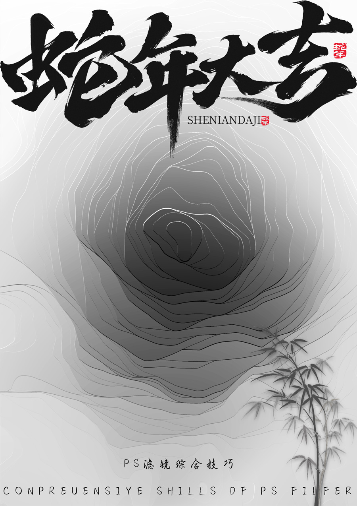

视频教程： https://youtu.be/nuAmfGSxnz8
视频中使用的素材：点击下载>> | 备用下载>>
操作步骤：
Ctrl+N 新建文件
新建图层 → 黑色背景 (Alt+Delete)
画笔工具：白色前景色 → 调整大小 (Alt+右键拖拽) → 画面中点绘
新建图层 → 滤镜渲染云彩 → 调整不透明度
合并图层 (Ctrl+E) → 晶格化滤镜 (大小198) → 中间值滤镜 (调整半径)
光照效果滤镜：交叉光 → 调参数 (着色100/降低光泽/聚光调整)
添加渐变映射 (反向效果)
导入素材 → Shift调整大小 → 添加文字
盖印图层 (Alt+Shift+E) → 曲线提亮 → 色相饱和度调整
以下是PS水墨线条成品效果

步骤：
首先我们Ctrl+N
新建一个图层
然后把背景调成黑色
Alt+Delete
然后我们点击画笔工具
把前景色调成白色
按住Alt键+拖动鼠标右键 调整画笔大小
把它点在中间的位置
这是个从从白到黑的渐变
然后我们先新建个图层
选择滤镜
渲染云彩
这里我们调整下不透明度
然后我们
按住Shift键给他合并Ctrl+E
然后我们点击滤镜像素化晶格化
这里我们
大小选择198
然后我我们点击滤镜
杂色选择这个中间值
这两个
半径
适当调一下 确定
然后我们点击滤镜
我们选择渲染 选择光照效果
这里我们选择一个交叉光
这里我们调整一下参数
这里我们选择红色
高度适当调一下
我们把光泽降一降
把聚光
也调一下
这里着色我们调成100
然后我们点击确定
然后我们点击这里
选择一个渐变映射
他就反向过来了
然后我们把
把这个素材拖进来
这个素材我放在视频下方大家可以领取
我们调整
按住Shift键调整字体大小调整下大小
然后我们把下段素材拖进来
给他放大
确定
给他调整下位置
然后再打上我们的文字
调整下大小
然后我们按住Alt键
把下一段文字复制过来
按住Alt+Shift+E给他盖印一个图层
调出曲线
提高它的亮度
然后再选择色相饱和度
然后我们这个水墨线条效果就完成了